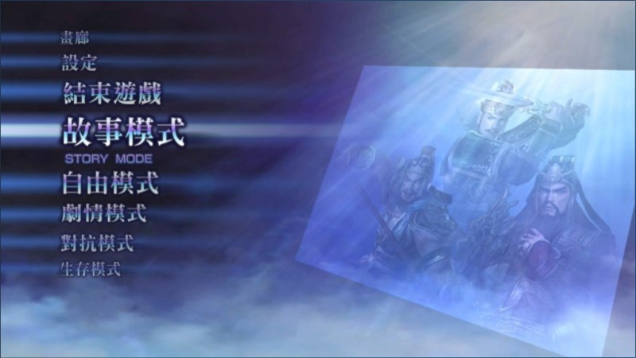
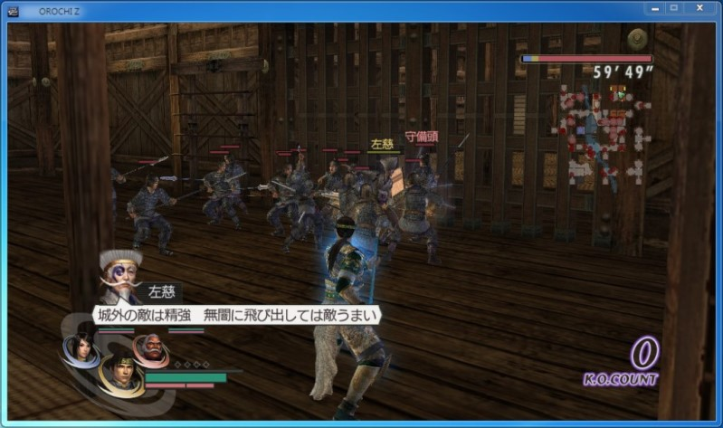
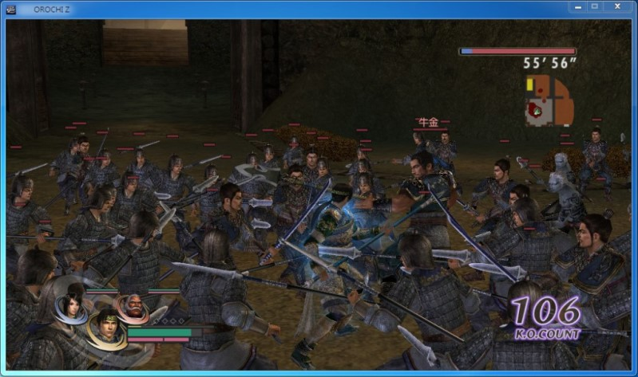
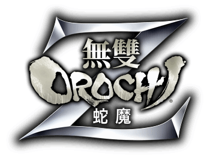

介紹篇：基本介紹
為方便閱讀，《無雙 OROCHI》將簡稱為「本傳」，而《無雙 OROCHI 魔王再臨》簡稱為「魔王再臨」，《無雙 OROCHI Z》有時會簡稱為 ORZ。
《無雙 OROCHI Z》Windows 繁體中文版
2009 年 12 月 24 日，KOEI 推出 PC 平台的《無雙 OROCHI Z》中文版，沒落的單機遊戲終於又有一款值得玩、而且能玩得痛快的作品！

隨著 2010 年的到來，2000 年代將漸漸變得像 80 年代和 90 年代一樣，成為讓人懷舊的年代。而最能象徵 2000 年代的經典遊戲代表作，當然非「無雙系列」莫屬了！
而《無雙 OROCHI》是將《真．三國無雙 4》《戰國無雙》《戰國無雙 2》的角色，集合在同一場混亂時空裡面，實現玩家讓兩系列作品角色一較高下的「無雙系列作品」，這樣的賣點相當吸引人，使得本作頗受好評。因此，這款 OC 版的《無雙 OROCHI Z》對我個人而言，是有收藏意義的經典遊戲，它正是 2000 年代無雙系列的最完美集結啊！
所以，雖然是在舊瓶換新裝，但我還是滿懷喜悅地整理《無雙 OROCHI Z》的攻略，做為告別 2000 年代的心意……
又在騙錢的遊戲？
PC 版並未出「魔王再臨」，而《無雙 OROCHI Z》其實就是「魔王再臨」，然後補上「本傳」的劇情所推出的作品。因此，《無雙 OROCHI Z》並非把「本傳」稍微改一改就拿來騙錢的遊戲，應該視為 PC 版的「魔王再臨」。當然，如果你認為「魔王再臨」就是把「本傳」稍微改一改的騙錢遊戲，就另當別論了！
不過《無雙 OROCHI Z》還是有以下強化……
1
角色從原本 79 名增加到 96 名，劇本增加到 140 個。（劇本不等於地圖，因為有些劇本是拿重複的地圖設計出來。）
2
可進行的遊戲模式由原先單調的「故事模式」和「自由模式」兩種玩法，增加了「劇情模式」、「對抗模式」、以及「生存模式」，總共有五種模式可玩。當然，「故事模式」比「本傳」多了「魔王再臨」的五章關卡可玩。（不過很多並不耐玩。）
3
每位角色增加第四套「造型」。以往的造型感覺只是變色而已，這次《無雙 OROCHI Z》增加的第四套衣服會讓整個角色的外觀煥然一新！（其實很多角色第四套造型也是變個顏色而已。）
4
更多的劇情動畫影片。（女媧的特別好看）
5
PC 版的「本傳」是以 PS2 為基礎的版本移植過來，而《無雙 OROCHI Z》則是整個從 PS3 版本移植過來，因此畫面與音效都更加細緻，例如：
A
角色的 3D 模型已經根據 PS3 性能而重製，不僅造型細節較為精緻，肢體動作更是變得靈活與豐富，顯得更能表現出每位角色的個性。所謂「重製」，就是照抄前作的造型，但其實還是「重新繪製」，證據是《無雙 OROCHI Z》比「本傳」展現更靈活的肢體動作。
B
每個關卡的場景配置得更有層次，玩家在戰場中來回奔馳時較有穿梭於景物之間的感覺。
C
光影效果變得明顯，在「本傳」角色發動屬性攻擊時往往看不出來，現在一眼就能看出「雷」和「冰」等效果。
D
音樂效果微幅提高音質，並增加新的背景音樂。
E
支援 16: 9 尺寸的畫面。原本 4:3 的畫面，把武將打飛後容易找不到人，現在比較容易掌握敵將的動向了：


【不妨想像一下在這 16:9 的畫面放趙雲的 C3 或 C4，掃起來的感覺想必更紮實吧？】
F
士兵從每組 4 人增加為每組 12 人，畫面擠滿了小兵，打起來更加過癮。
G
電腦智能較聰明，小兵懂得趁人之危（平常不敢動，看到你被打就很積極過來圍毆），敵將見苗頭不對會先離你遠一點進行迂迴攻擊，還會發動蓄力攻擊和類型招式。
《無雙 OROCHI Z》確實都只在小地方進行強化，但如果每個小地方都有進步，玩起來還是能感受到不一樣的便利。
如果玩過「本傳」的你，還是覺得這款 ORZ 在騙錢的話，不妨看看被設計成櫻花妹的卑彌呼再說，這是「魔王再臨」新增角色中最有趣的，請注意看他的攻擊動作，都是 90 年代日本流行舞步：
http://youtu.be/LihkouDYXgg
卑彌呼不只動作有趣，攻擊更是爆猛，普通攻擊就是範圍技，且又廣又遠，而單打技能隨便發動就上看 200 連擊（所以隨便也能 1000 連擊），號稱新增角色中最強的王牌！
沒玩過卑彌呼，別說你玩過 OROCHI～
需求配備
雖然進行了相當程度的強化，但《無雙 OROCHI Z》PC 中文版的配備需求，卻與「本傳」一樣：
處理器：Intel Pentium 4 1.6 GHz 以上 (建議 Intel Core 2 Duo 2.4 GHz 以上)
記憶體：512 MB
顯示卡：支援 DirectX 9.0C 以及 Shader 功能的 128 MB 記憶體 3D 顯示卡。
即使為 DirectX 9.0C 程式，若版本比「9.23.1350」舊，仍有可能無法正常運作，請安裝最新版的程式。
需求一樣，但其實有比「本傳」累格，沒有雙核心處理器的玩家恐怕無法跑得順暢。但是硬要玩的話可以嘗試使用修改器的「減兵補丁」看看，請參考本攻略集的附錄。
其實，《無雙 OROCHI Z》在 PS3 也會累格，如果你配備符合雙核心，卻還是稍微累格，就當作是正常現象，不用太介意自己配備是否跟不上時代。
建議售價 980（其實連順發賣場都賣 820 元），值得買嗎？
至於值不值得買，我不反對你先用動物把遊戲駝回家玩看看，玩得滿意、也覺得想買來收藏的話，才叫值得買不是嗎？
當然 KOEI 對這種行為一定很反感，但對風評不好的大公司而言，這樣的消費模式反而對品牌滿意度有顯著的加分，因為大家都是心甘情願買你的產品，而且因為是真正覺得不錯玩才買，買得會很心滿意足，這才是「品牌」啊！
事實上，我很有信心，玩過《無雙 OROCHI Z》PC 版的人，就算是需要量力而為的玩家也會傾向買正版！（窮學生就當作功德讓他們玩，期許出社會後能以感恩的心買正版。）而反過來看，如果連駝都沒駝，大家一定認為這只是騙錢的舊遊戲，連碰都不想碰。這點，或許「駝」反而是最有效的「行銷」也說不定？
其實北中南各地最大的電子商圈（台北光華商場、台中高雄電子街），甚至有殺到 7 百字頭的價格了，就算你玩動物版，有能力也不妨存錢買來收藏吧！但仔細點，別買到一代就是了，買的時候一定要注意看有Ｚ標誌。

缺點
1
雖然齊聚三國與日本戰國的人物於一堂，但其實只留打鬥用的部份，一些能表現角色個性的東西都被省略，例如角色的登場動畫與過關動畫都看不到。[1]
2
《無雙 OROCHI Z》因為是從「魔王再臨」的基礎，再補上「本傳」的內容而來的合輯，因此《無雙 OROCHI Z》不全然等同於「本傳」。最明顯的差異就是沒了「角色道具」可打，因為改成「魔王再臨」的「素材」。雖然「素材」所「鍊成」出來的效果，遠遠高於角色道具，實用性更高，但總是讓人覺得可惜。